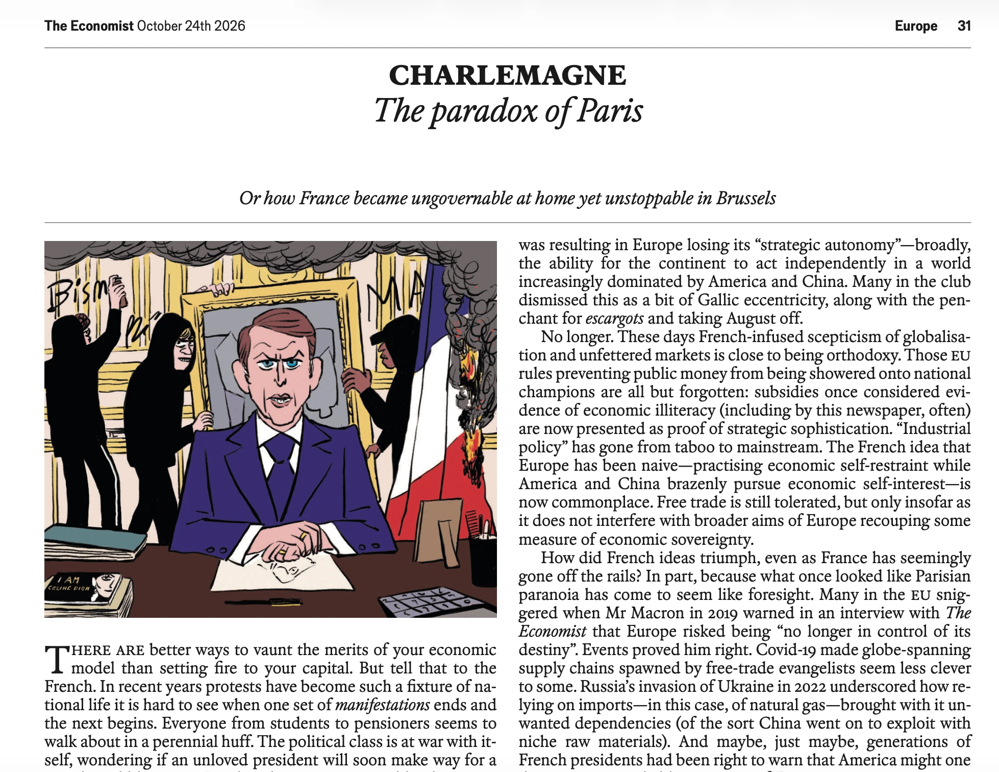
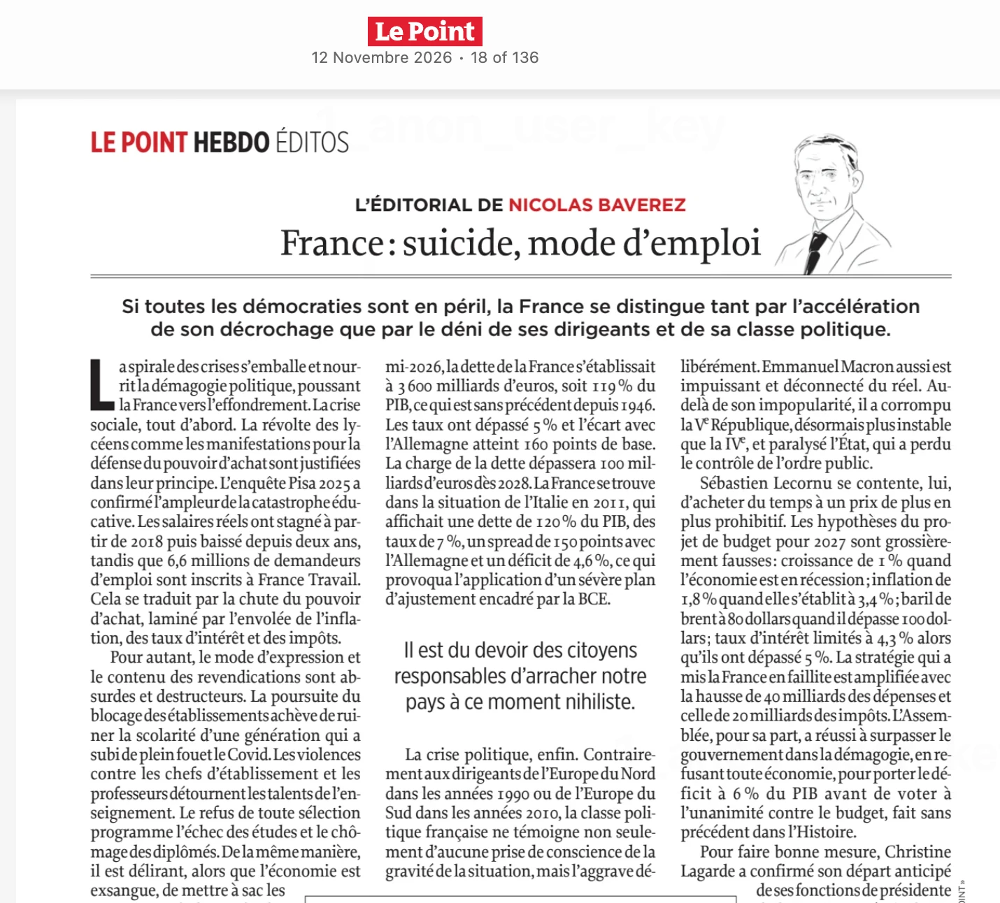
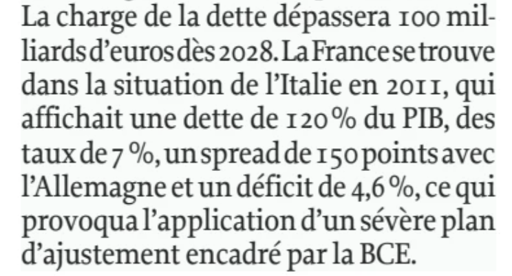

France’s ideas on industry and autonomy are shaping EU policy, yet its own finances are slipping out of control.
1 News
2 Context
3 Analysis
4 Discussion
PART 1 · NEWS · THE ANGLE
What is the paradox of Paris?
France is hard to govern right now, with constant protests, heavy public debt and a divided political class.
Yet in Brussels, French ideas about protecting European industry and depending less on the US and China are becoming mainstream EU thinking.
So the country that struggles to run itself is increasingly the one shaping how Europe runs its economy.
PART 1 · NEWS · THE OPENING
The opening contradiction
WHAT WE WOULD EXPECT
Turmoil at home means less influence
Protests, heavy debt and a divided political class
Investors charge France more to borrow: debt is 119% of GDP, and its interest rates run about 1.6 points above Germany’s (per Le Point)
WHAT WE FIND
More influence in Brussels
Industrial policy is now mainstream
Germany now goes along with French-style intervention, within limits
Why this can happen: influence rests on events and EU politics, not on how well France is governed.
Events: Covid, Russia’s invasion of Ukraine and doubts about the US made France’s old arguments for European autonomy look right.
EU politics: Brexit removed the main opponent of French thinking, and Germany shifted as Chinese carmakers began to compete.
PART 1 · NEWS · THE MAIN MATERIAL
The source and the actors

THE SOURCE
The Economist, Europe section, 24 October 2026, p. 31
Charlemagne column: “The paradox of Paris”
Written by Stanley Pignal, Brussels bureau chief
Named after Charlemagne, the first Holy Roman Emperor
KEY ACTORS
Emmanuel Macron · Marine Le Pen · Commissioner Séjourné · Germany · the European Commission · bond markets · the UK and Canada
PART 1 · NEWS · OUR MATERIALS
Analysis, interview, law and opinion
FOUNDATION · ANALYSIS
The Economist
Charlemagne, “The paradox of Paris”, 24 Oct 2026. It frames the paradox and gives the diagnosis.
SECONDARY · INTERVIEW
Euronews
Séjourné interview, article and video, 23–24 Sep 2026, on rebalancing trade with China.
PRIMARY · LAW
Industrial Accelerator Act
COM(2026) 100, Commission proposal of 4 March 2026. The legal text behind “Made in EU”.
OPINION · FRENCH VIEW
Le Point, Nicolas Baverez, “France : suicide, mode d’emploi”, 12 Nov 2026. A French editorial on the domestic crisis, used for figures on debt and the ECB risk.
PART 1 · NEWS · THE FRENCH VIEW
Le Point: the French view of the crisis

THE SOURCE
Le Point, 12 November 2026. Editorial by Nicolas Baverez, “France : suicide, mode d’emploi”.
119%
debt-to-GDP ratio in mid-2026, a level not seen since 1946
5%+
interest rates, with a gap of about 160 points over Germany
IN HIS WORDS
“La France se trouve dans la situation de l’Italie en 2011.”
Translation: “France finds itself in Italy’s 2011 situation.”

PART 1 · NEWS · THE NUMBERS
Who pays more to borrow
Ranked by debt
Debt-to-GDP, end of Q2 2026
10-year yield, mid-Nov 2026 (#1 = cheapest)
1. Greece
140.8%
≈4.26% · #5
2. Italy
139.9%
≈4.42% · #6
3. France
119.1%
≈4.70% · #7
4. Belgium
110.2%
n/a (no reliable figure found)
5. Spain
101.4%
≈3.94% · #4
6. Portugal
92.5%
≈3.80% · #3
7. Finland
90.2%
n/a (no reliable figure found)
8. Austria
83.6%
n/a (no reliable figure found)
9. Germany
63.4%
≈3.37% · #1
10. Netherlands
43.7%
≈3.46% · #2
Debt-to-GDP compares a country’s public debt with the size of its yearly economy. A ratio of 119% means France owes more than a full year of everything it produces. Investors see higher ratios as riskier, which can push up the interest a country pays.
Reading it: of the seven countries with a yield, France pays the most to borrow, though its debt ratio ranks only third. Sources: Eurostat, Q2 2026 (debt); Bloomberg and Trading Economics, 10–13 Nov 2026 (yields, approximate). n/a = no reliable figure found.
PART 2 · CONTEXT · BACKGROUND FOR THE READER
For decades, France usually lost in Brussels
Free markets came first
Germany’s faith in free markets usually beat France’s instinct for state intervention.
EU rules banned governments from giving state money to chosen companies.
France got generous farm subsidies in return, mainly from the Common Agricultural Policy, where it is a top beneficiary.
France’s warning, long dismissed
Macron warned that Europe depends too much on America and China, losing its “strategic autonomy”: the ability to decide for itself.
He said this from early in his presidency, and again in 2019 in The Economist, warning Europe risked losing control of its destiny.
Many EU partners dismissed it as “Gallic eccentricity”, an odd French quirk.
PART 2 · CONTEXT · BACKGROUND FOR THE READER
How the EU came round to France’s view
EU attitude: free trade firstcloser to France’s view
For decades
Free trade comes first. France usually loses.
From 2017
Macron warns Europe is losing control. Many dismiss it.
2020
Covid-19: global supply chains look risky.
2022
Russia invades Ukraine. Gas reliance is exposed.
Another doubt
Maybe France was right: could the US prove unreliable?
Now
Brexit and Germany’s shift: the EU turns toward France’s view.
The shift: events turned France’s old warnings into mainstream EU thinking, and Germany now goes along, within limits.
PART 2 · CONTEXT · EVIDENCE: THE LAW
The Industrial Accelerator Act
The goal
Raise manufacturing to 20% of EU GDP by 2035. It was 14.3% in 2024.
Buy European
Public procurement and support schemes would need low-carbon or Union-origin steel, concrete, aluminium and vehicles.
Foreign investors
Investments above €100 million in strategic sectors would face conditions on know-how, jobs and EU value chains.
Séjourné: Europe must protect its industries with ‘Made in Europe’
Stéphane Séjourné, Executive Vice-President of the European Commission for Prosperity and Industrial Strategy
WHAT THE STRATEGY IS
“Made in Europe” means using public money and market access to favour European, low-carbon products. The proposed Industrial Accelerator Act would add “Made in EU” requirements to public procurement for steel, cement, aluminium and cars. Séjourné says it will “boost demand and guarantee resilient supply chains”.
€1bn+
daily EU trade deficit with China, July
250,000
EU industrial jobs lost last year, says Séjourné
Sources: European Commission, 4 Mar 2026; Euronews, 23–24 Sep 2026.
PART 3 · ANALYSIS · THE INTERESTS
Who wants what
Actor
Main interest
Role in the story
Macron
Strategic autonomy for Europe
Long-time advocate of intervention
Séjourné
Industrial strategy, fairer trade
Commission Vice-President behind the IAA
Germany
Protect carmakers from China
Now goes along with French-style intervention, within limits
China
Keep access to EU markets
Resists voluntary export limits
Le Pen
National interests first in the EU
Leading opposition figure in France
Bond markets
Credible public finances
Demand higher yields from Paris
PART 3 · ANALYSIS · THE CONSEQUENCES
What this means for France and the EU
Main stakes
Whether EU economic policy is rebuilt on French ideas
Autonomy abroad versus control of finances at home
France’s credibility as a leading voice
Short term
“Made in Europe” will probably go ahead, but in a weaker form
Budget stalemate: 458 to 0 vote on 4 Nov
Bond-market pressure on Paris continues
ECB may be pushed to step in, as for Italy in 2011 (Le Point)
Long term
A Le Pen presidency could push the EU toward putting national interests first
Risk that EU industrial policy becomes broad, untargeted spending
Autonomy needs control of one’s own finances
PART 3 · ANALYSIS · THE ARGUMENT
The argument
France’s influence rests on events, not on its own strength, so Europe may adopt its strategy without the means to pay for it.
1. France won the argument
Covid, Russia, doubts about the US and shifts inside the EU made French ideas mainstream.
2. France is losing the budget
The Assembly rejected the 2027 revenue bill, 458 to 0, and bond markets are watching.
3. Influence without solvency is fragile
A country that cannot control its budget has little autonomy, and the Act is still only a proposal.
PART 4 · DISCUSSION · OPEN QUESTIONS
Open questions
1
Can the EU follow France’s strategy without France’s debt?
Who pays for “Made in Europe” if national budgets are already stretched?
2
Will Germany make “Made in Europe” less protectionist?
Should allies such as the UK and Canada count as “European”?
3
Will the Industrial Accelerator Act survive Parliament and Council?
If it is softened, how much of France’s agenda survives?
4
Is France in Italy’s 2011 situation?
If so, would the ECB step in, and at what price?
PART 4 · DISCUSSION · CONCLUSION
Influence without solvency
In short: the power to shape EU policy without the financial means to fund it.
France has won the argument. Europe now speaks of strategic autonomy, industrial policy and buying European. But a country that cannot pass a budget or finance its debt cannot lead that turn. Its influence is borrowed, not earned.
What decides it: how far Germany softens “Made in Europe”, whether Parliament and Council keep the Act’s core, and whether a possible future Le Pen presidency would push the EU toward putting national interests first.
Foundation: Charlemagne, “The paradox of Paris”, The Economist, 24 October 2026, p. 31. Secondary:Euronews, interview with Séjourné, Walker and Grobe, 23 September 2026 (video, 24 September 2026). Primary:European Commission, Industrial Accelerator Act, COM(2026) 100, 4 March 2026. Opinion: Nicolas Baverez, “France : suicide, mode d’emploi”, Le Point no. 2833, 12 November 2026, p. 18. Also: TimeFrance · LCP